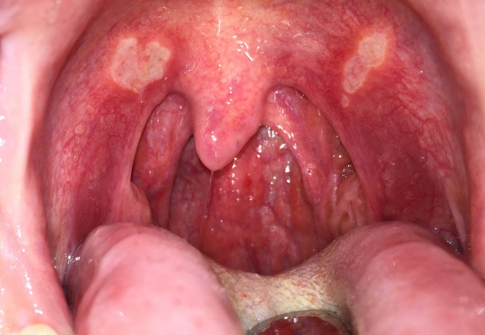
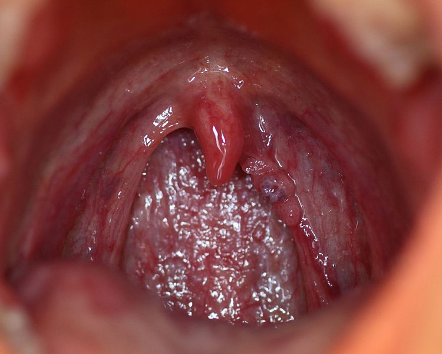

Cancer De La Gorge.
Qu'est-ce que le cancer de la gorge ?
Le cancer de la gorge est une tumeur maligne qui se développe au niveau du pharynx ou du larynx.
Un cancer est toujours le résultat de la multiplication anarchique de cellules anormales, qui se divisent sans interruption. Elles forment une tumeur dite "maligne". En l'absence de traitement, elle s'étend de façon progressive dans son tissu d'origine, puis infiltre les tissus voisins, voire se répand à distance ( métastase).
Le cancer de la gorge peut naître au niveau du pharynx (60% des cas) : on l'aperçoit en ouvrant la bouche en grand. Il contient les amygdales. Le pharynx assure le passage de l'air vers le larynx, et des aliments vers l'oesophage.
Il peut également apparaître au niveau du larynx (40% des cas) : situé juste en dessous du pharynx, il se continue en bas par la trachée. Ses parois sont formées d'anneaux de cartilages. Le plus visible est la pomme d'Adam. Le larynx contient les deux cordes vocales, dont la vibration permet de parler. La plupart des cancers du larynx débutent près des cordes vocales.
Cancer de la gorge : les symptÔmes.
SymptÔmes : Les signes et symptÔmes les plus fréquents du cancer du larynx sont les suivants :
une altération de la voix, qui devient par exemple enrouée ou éteinte, pendant plus de quelques semaines
un mal de gorge constant
la sensation d’avoir quelque chose de coincé dans la gorge
une déglutition difficile ou douloureuse
une toux
un mal d’oreille
une difficulté à respirer
une respiration bruyante
une masse perceptible dans le cou
une haleine nauséabonde
une perte de poid
 